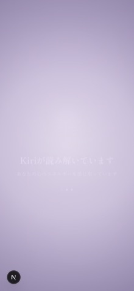
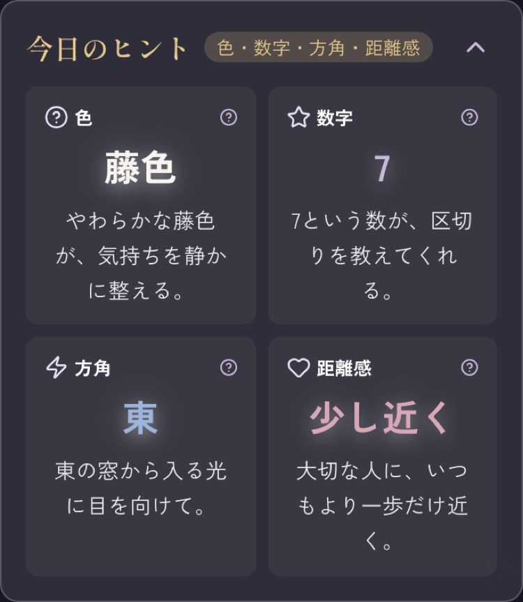
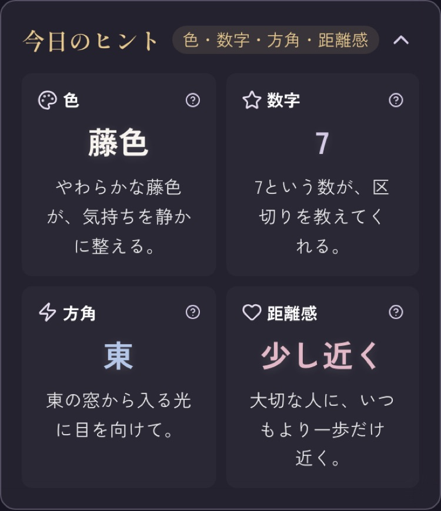
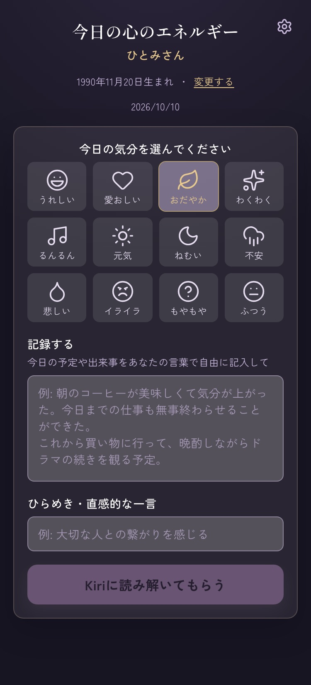
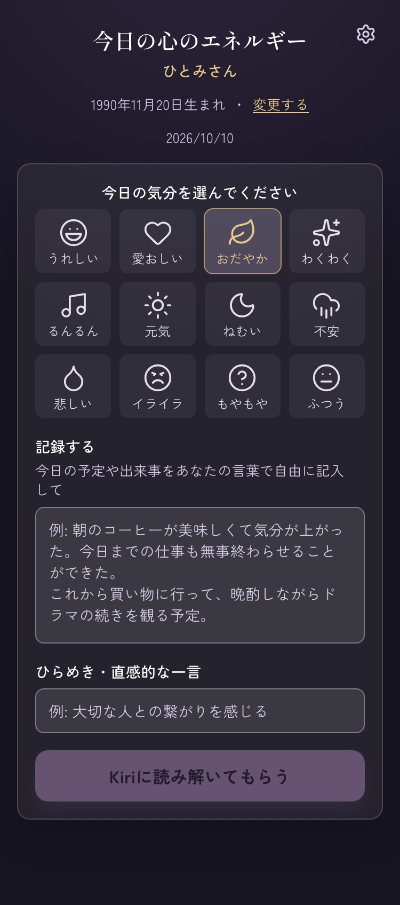
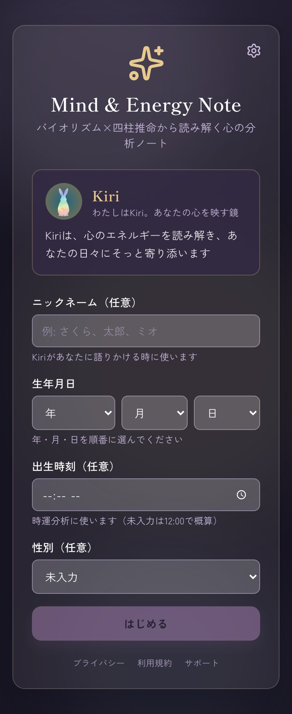
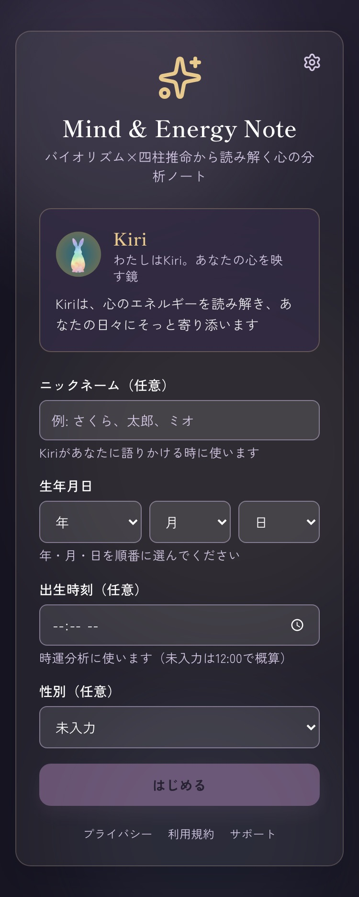
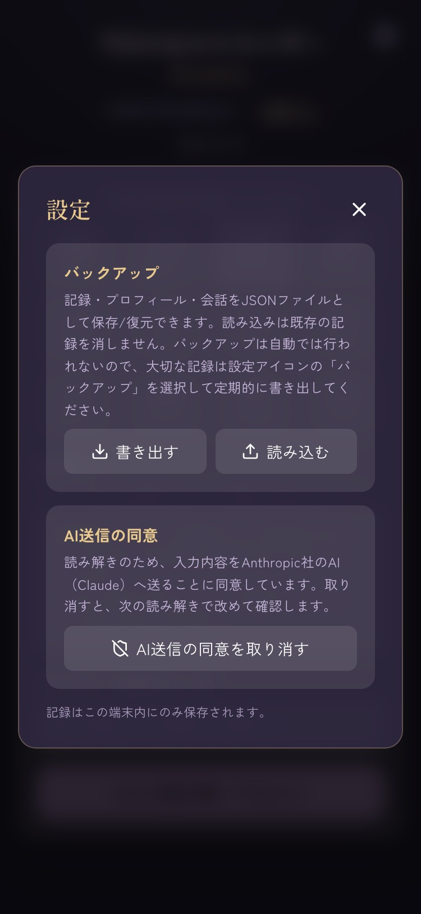
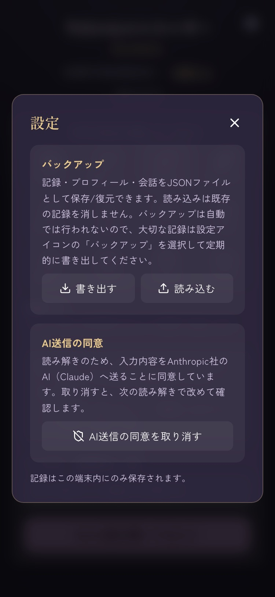

ひとみうさの指示どおりに組み合わせた実装の画面です：文字色は案1（補助文字を一段明るく）、字の大きさは案2（12px→13px・11px→12px・バイオリズムの%を20px）、面の暗さは案3（カード・内側の箱・色つきの箱を少し暗く）。加えて、今日のヒントの白い光を控えめにし、「色」のアイコンを「？」からパレットに変えました。地の夜色・金色・グラフの棒の色は変えていません。左が調整前、右が調整後。画像をタップで原寸。
調整前は霧が半透明で、後ろの「Kiriが読み解いています」の白い文字が薄紫の上に透けて読めない画面になっていた。調整後は霧を不透明にし、霧が出始めたら文字を先に消し、覆いきってから結果へ切り替える。ふわっと出て晴れる動きも本来どおり効くように直した（部品の作り直しで動きが止まっていた）。

「色」のアイコンをパレットに。数字・文字の後ろの白い光を弱く（0 3px 12px 40%＋0 0 30px 20% → 0 1px 8px 12%）。


入力欄の面を暗く、例文と補助文字を明るく。選んだ気分の面を落ち着かせた。いちばん小さい文字 12→13px。


ニックネーム欄の例文（現行 1.83:1）を読める明るさに。下のリンクは 11→12px。


カードの面を少し暗く、説明文を明るく。


四柱推命の青・金の箱の面を暗く、バイオリズムの % を 18→20px。